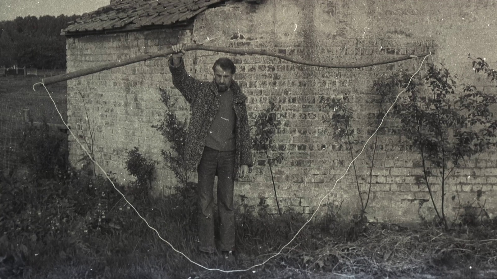

Het koninkrijk van René Heyvaert

René Heyvaert (1929–1984) is een van de meest eigenzinnige figuren uit de naoorlogse Belgische kunstgeschiedenis. Hij begint zijn carrière als architect en ontwerpt in de jaren vijftig experimentele woningen met eenvoudige, goedkope materialen. Zijn bekendste realisatie is de woning die hij in 1958 voor zijn broer Gilbert bouwt in Destelbergen. Het huis, dat radicaal breekt met de toenmalige bouwconventies, wordt later een inspiratiebron voor een nieuwe generatie architecten. Maar Heyvaerts compromisloze houding maakt het hem moeilijk om als architect aan de slag te blijven.
Na een verblijf in de Verenigde Staten en een pijnlijke gezinsbreuk trekt Heyvaert zich terug in de Vlaamse Ardennen. Hij laat de architectuur achter zich en wijdt zich volledig aan de beeldende kunst. Met alledaagse materialen als hout, karton, papier en gebruiksvoorwerpen maakt hij ogenschijnlijk eenvoudige, maar verrassend poëtische kunstwerken. Zijn zwakke gezondheid en toenemende isolement bepalen mee zijn werk. Via brieven en kleine kunstwerken die hij per post verstuurt, blijft hij contact zoeken met de buitenwereld. Tijdens zijn leven krijgt zijn kunst nauwelijks erkenning.
Het koninkrijk van René Heyvaert reconstrueert het leven van een kunstenaar die zich nooit in een vakje liet stoppen. Aan de hand van gesprekken met familieleden, vrienden, kunstenaars en architecten ontstaat een persoonlijk portret van een man die voortdurend balanceerde tussen ambitie en teleurstelling, vrijheid en eenzaamheid. Pas na zijn dood krijgt zijn oeuvre de aandacht die het verdient, onder meer dankzij een tentoonstelling tijdens Initiatief 86 in Gent. De documentaire toont hoe Heyvaerts radicale eenvoud en onafhankelijke geest tot vandaag kunstenaars en architecten blijven inspireren.
- Regie
- Bertrand Lafontaine en Pieter Verbiest
- Eindredactie
- Bertrand Lafontaine
- Camera en montage
- Pieter Verbiest
- Première M Leuven · 13.12.2018
- Sint-Lucas Brussel · 02–03.07.2022
- Settantotto Art Gallery Gentbrugge, met Q&A · 21.09.2025